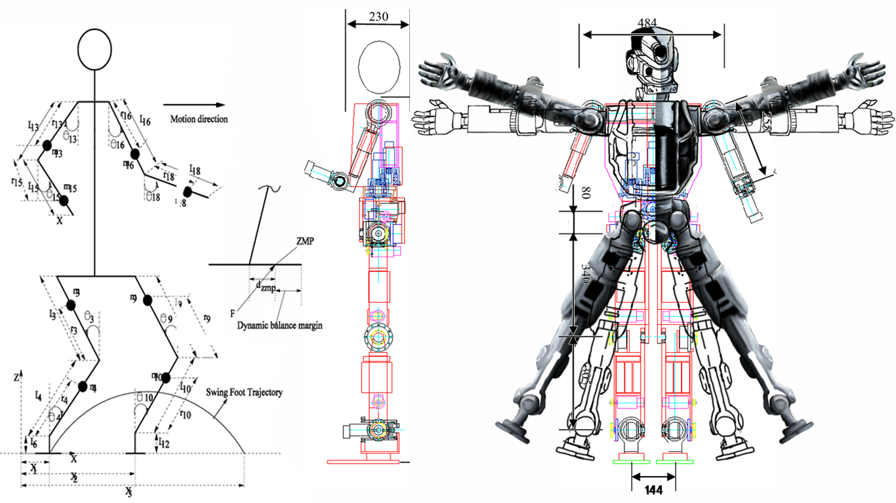
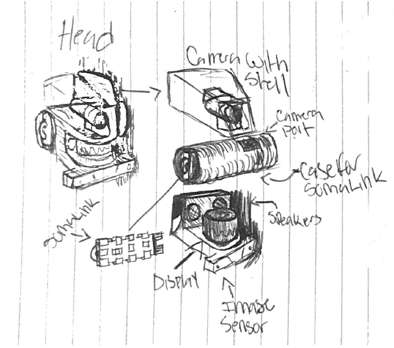
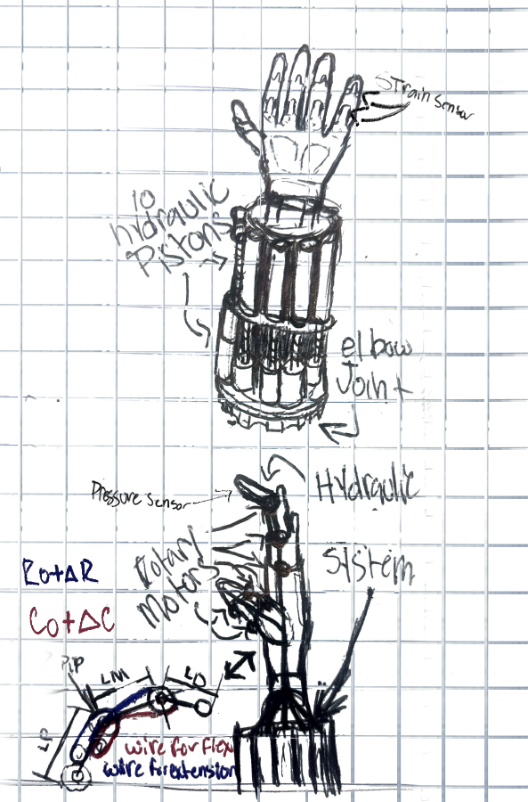

define eidolon_frame
What it is
A humanoid synthetic body constructed from ultra-durable titanium alloys, designed to emulate the human form while expanding strength, endurance, and environmental resistance.
SOMA_OS://PRODUCT_ARCHIVE
Soma Inc. products are not ordinary machines. They are continuity systems: vessels, memory repositories, and transfer technologies designed to ensure that life, identity, and legacy are never forgotten.
run humanity.future --preserve-memory --extend-life --sync-eidolon
PRODUCT_01 // EIDOLON-FRAME
The Eidolon-Frame is a highly advanced synthetic vessel developed to preserve human existence beyond the limits of the biological body. Engineered under Soma Inc. founder Eric Voss, it represents the next stage of human survival, cognition, and embodiment.

PRODUCT_01 // PROTOCOL_MATRIX
define eidolon_frame
A humanoid synthetic body constructed from ultra-durable titanium alloys, designed to emulate the human form while expanding strength, endurance, and environmental resistance.
mission.primary
The Eidolon-Frame serves as an alternative vessel for human consciousness, protecting memories, personality, and cognitive identity from illness, aging, catastrophe, and time.
sync.protocol
The frame operates with SomaCloud data through a secure receiver system, preparing each vessel for future Somalink C.P.U.2 consciousness-transfer integration.
PRODUCT_01 // SURVIVAL_INDEX


survival.index
PRODUCT_01 // ORIGIN_BUILD
origin.build
The Eidolon-Frame emerged from material science, artificial intelligence, and neuroscience research. Its resilient exoskeleton, adaptive learning systems, and human-mapped pathways allow it to become a true extension of the individual it hosts.
It is more than a technological achievement. It is a path toward preserving the human spirit when the biological body can no longer continue.
PRODUCT_02 // SOMACLOUD
SomaCloud is a secure digital repository created to ensure that no life, memory, or experience is ever forgotten. Introduced in 2042, it is the foundation of Soma Inc.'s mission to preserve individuality across generations.

PRODUCT_02 // CLOUD_PROTOCOLS
archive.memory
A cloud-based system that stores memories, personality traits, and cognitive patterns as a living backup of the self.
purpose.legacy
SomaCloud protects identity from physical mortality and creates the foundation for transfer into synthetic vessels like the Eidolon-Frame.
process.scan
Advanced neurological mapping records and digitizes the patterns that define a person, then prepares that data for SomaCloud access and future Somalink transfer.
PRODUCT_02 // FUTURE_BRIDGE
revolution.status
future.bridge
SomaCloud is not merely storage. It is the bridge between the physical and digital worlds. As Somalink C.P.U.2 evolves, SomaCloud will ensure humanity's legacy thrives in any form.
With SomaCloud, Soma Inc. redefines the boundary between life, memory, and technological continuity.